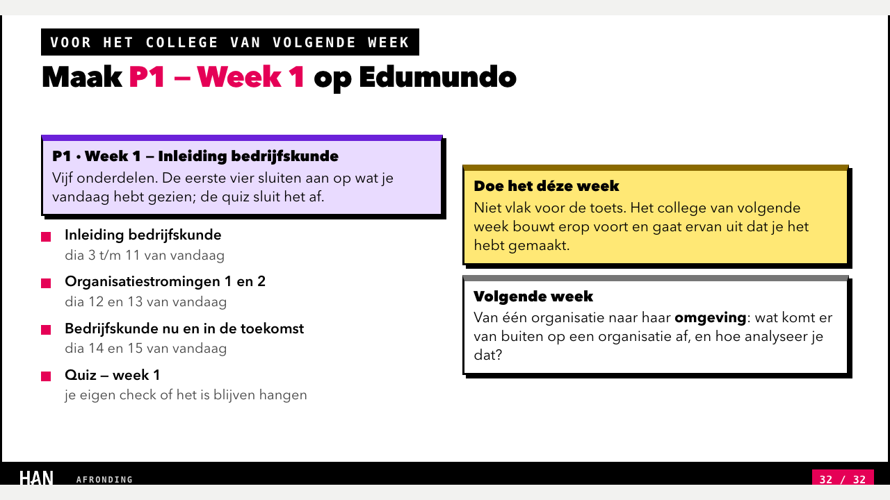
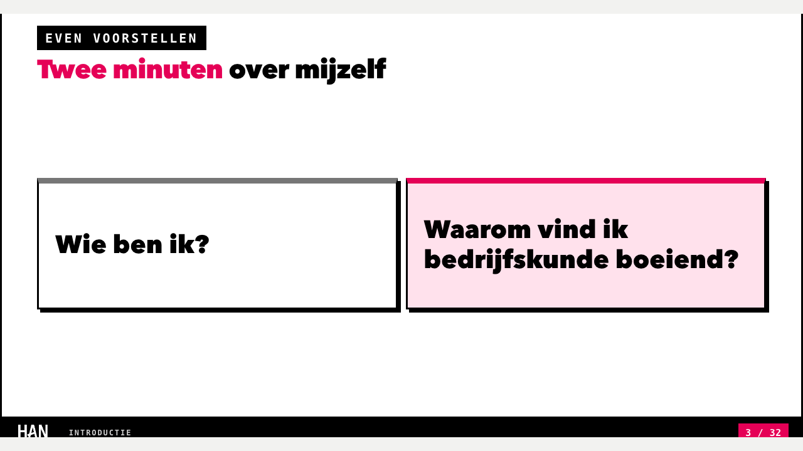
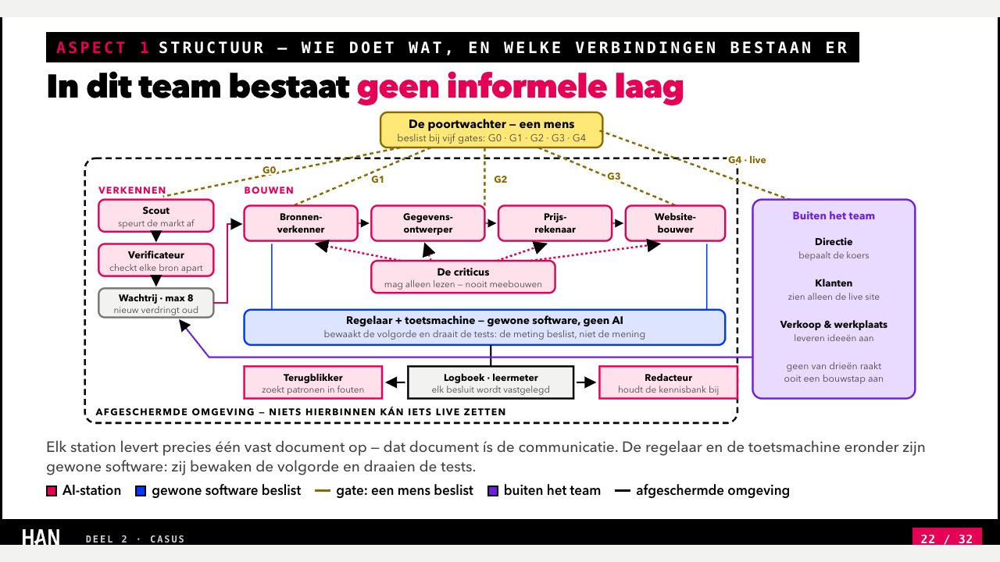
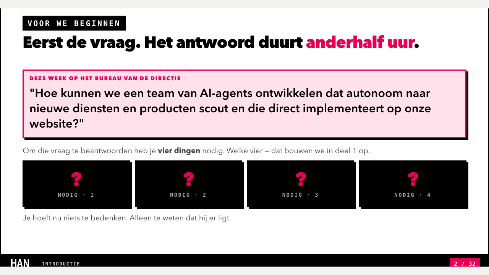

Herbeoordeling van het hoorcollege Introductie Bedrijfskunde (versie 1 september 2026, met de nieuwe dia 3 „Wie staat hier") op de dertien criteria van de huismeetlat, naast de beoordeling van 28 augustus.
Eerst het eerlijke antwoord op je vraag. Dit is een goed college en je kunt het morgen geven. Het verhaal (één directievraag, vier begrippen, een casus die één begrip laat sneuvelen) staat als een huis, de activering is ruim boven de norm en de dia's zijn achterin de zaal leesbaar. Op de huismeetlat komt het uit op 3,77 van 5 — band „goed" — en niet meer op de 4,55 van 28 augustus. Dat verschil komt niet doordat het college slechter is geworden, maar door twee dingen: de meetlat is sinds 2 september strenger (een script-FAIL op een hard criterium plafonneert dat criterium op 3), en de toegevoegde dia 3 heeft drie kleine dingen kapotgemaakt die eerder klopten.
De drie punten voor vanavond, op volgorde van rendement:
1 · Dia 32 verwijst naar de verkeerde dia's. „Inleiding bedrijfskunde: dia 3 t/m 11", „Organisatiestromingen: dia 12 en 13", „Bedrijfskunde nu en straks: dia 14 en 15" — dat klopte toen er 31 dia's waren. Nu is dia 3 „Wie staat hier", dia 12 „De 6 Capitals" en dia 14 „Acht stromingen". Het moet 4 t/m 12, 13 en 14, 15 en 16 zijn. Dit is een fout, geen keuze; twee minuten werk, en het scheelt vijf punten (D6 van 3 naar 5, S6 van 4 naar 5).
2 · De opening heeft nu vijf dia's zonder opdracht (1 t/m 5); de norm is vier en dat haalde de vorige versie precies. Dia 3 is de oorzaak. Geef dia 3 een getimed moment — bijvoorbeeld „Handen omhoog · 45 seconden: wie heeft in een bijbaan al eens gezien dat een besluit misging?" — dan sluit het aan op wat je notities daar al willen („één concreet moment") en is het gat weer vier. Tien minuten, zes punten (D4 van 3 naar 5, gewicht ×3).
3 · Dia 22 (197 woorden) en dia 24 (178) zitten boven de harde grens van 170. Dat stond ook al in de beoordeling van augustus, maar toen kostte het geen punten; nu plafonneert het D3 op 3. Dia 22 is de zwaarste tekening van het college (twintig elementen, in één keer getoond). Zet de lopende tekst onder de tekening in de notities en laat de tekening in twee stappen opkomen (team binnen het kader, dan de poortwachter en buiten het team). Twintig tot dertig minuten, vier punten. Als dat vanavond te veel is: laat het liggen, het college wordt er morgen niet slechter van — alleen de gate blijft rood.
Met de eerste twee punten staat het college op 4,27 („goed"); met alle drie op 4,45. De 4,55 van augustus komt terug als je daarna ook de afkortingen op dia 15 uitschrijft en een begrippenlijst toevoegt (sectie 6). Formeel is het college „niet opleverbaar" zolang D3 en D4 rood staan — dat is de regel van de meetlat, en ik meld hem, maar ik zou hem morgen om 9:00 niet als reden zien om het niet te geven.
De activering wordt zwaarder naarmate het college vordert: 45 tot 90 seconden in deel 1, twee keer twee minuten aan het eind van deel 2 (dia 29 en 30). Dat is precies goed — de zaal heeft dan de begrippen om iets mee te doen. Het enige gat dat de norm overschrijdt zit vooraan: de nieuwe dia 3 schuift het eerste moment (dia 6) één plaats op. Het tweede lange stuk, dia 20–22, is drie dia's uitleg over de casusstructuur en valt binnen de norm.
Schaal 1–5. Kolom „was" is de beoordeling van 28 augustus 2026 (31 dia's). Bewijs met dianummers; bij script-criteria de gemeten waarde en de drempel. Een script-FAIL die uit het college komt (niet uit het ontbrekende deckcontract) plafonneert het criterium op 3.
| # | Criterium | Was | Nu | Gew. | Waarop dit oordeel rust |
|---|---|---|---|---|---|
| Deel A — didactische kwaliteit | |||||
| D1 | Leerdoelen en alignment | 4 | 4 | ×2 | Twee leeruitkomsten op dia 1 als „Na dit college kun je …" en woordelijk terug op dia 31 („Wat je na dit college kunt"), met de toetsvorm ernaast (digitale kennistoets). Niet gekoppeld aan toetscriteria per leeruitkomst, en op de voorlaatste in plaats van de laatste dia. Script-FAIL (0/7 data-lo) komt volledig uit het ontbrekende contract. |
| D2 | Rode draad en segmentering | 5 | 5 | ×2 | Twee benoemde delen, tussendia 18, pauzedia 17. Drie lussen die dichtgaan: de vier zwarte vakjes „nodig · 1–4" op dia 2 gaan open op dia 20; de belofte „één regel houdt geen stand" (dia 16, voorspelmoment) wordt ingelost op dia 29; het eigen antwoord van dia 19 komt terug op dia 30 („pak je notitie van het begin erbij"). Dia 3 verstoort dit niet — de notities leggen uit waarom hij ná de vraag staat. |
| D3 | Cognitieve belasting en beeld | 5 | 3 | ×2 | Script: gem. 107 w/dia (norm ≤ 110) maar max 197 op dia 22 en 178 op dia 24 (norm ≤ 170) → FAIL uit het college, plafond 3. Beeld: dia 22 toont een tekening met ~20 elementen in één keer, wél met legenda; de kop is een bewering („geen informele laag"). Alle koppen zijn beweringen. In augustus stonden dezelfde twee dia's boven de 170 en kreeg D3 toch een 5; de meetlat van 2 september laat dat niet meer toe. |
| D4 | Activatie en ophaalmomenten | 5 | 3 | ×3 | Script: 14 momenten (≥ 10), 41% van de dia's (≥ 35%), 17,5 min (15–20), maar langste gat 5 (norm ≤ 4) → FAIL uit het college, plafond 3. „0 vormen" komt uit het ontbrekende data-vorm; op het etiket staan acht werkvormen (even denken, overleg in tweetallen, handen omhoog, denken–delen, voorspel, alleen · schrijf op, stem met je hand, slotvraag). Het gat is dia 1–5 en is ontstaan door de invoeging van dia 3. |
| D5 | Voorbeelden en transfer | 4 | 4 | ×2 | Ongewijzigd. Eén casus (autodealer met AI-agents, dia 19–30): echt, actueel, niet op te zoeken. Contrast in kleine voorbeelden (ziekenhuis dia 7 en 8, studievereniging dia 6, stage/bijbaan dia 14 en 27), maar geen tweede casus waarin de vier aspecten opnieuw vallen. |
| D5-n | Houdbaarheid benoemd | – | niet gemeten | ×2 | Geen deckcontract (geen data-model, data-houdbaarheid, data-bronjaar, data-casus); de script-FAIL „0/14 modellen" leest bovendien de IM-inhoudsopgave en zegt niets over dit IB-college. Deler 22. |
| D6 | Modelgebruik en opbouw | 5 | 3 | ×2 | Elk begrip van deel 2 is in deel 1 ingevoerd (vier kenmerken dia 6 → dia 20; drie niveaus dia 9 → dia 28; zes kapitalen dia 12 → dia 30). Bronvermelding op de dia (McKinsey dia 21, Deming dia 27, Integrated Reporting dia 12). Maar: drie verwijzingsfouten op dia 32 — „dia 3 t/m 11", „dia 12 en 13", „dia 14 en 15" wijzen sinds de invoeging van dia 3 één dia te vroeg. De meetlat zegt: één verwijzingsfout is een 3. |
| D7 | Afsluiting en doorkijk | 4 | 4 | ×1 | Huiswerk bij naam (dia 32: P1 · Week 1 op Edumundo, vier onderdelen), doorkijk naar volgende week (dia 32) en naar de toets (dia 31). Ophaalcheck alleen in de notities van dia 31 („welke van deze twee kun je nu?"), zonder klok en zonder onthulling. Script-FAIL komt uit ontbrekende data-check/huiswerk/doorkijk. |
| Deel B — studentervaring | |||||
| S1 | Relevantie en motivatie | 5 | 5 | ×2 | Dia 1: „een vraag waar een echte directie geen antwoord op heeft. En jij ook niet — nog niet." Dia 2 legt de vraag letterlijk op tafel en belooft vier dingen; de notities van dia 1 bevatten een tweede, mondelinge belofte (één begrip sneuvelt) die op dia 29 wordt ingelost. Dia 3 komt nadat de spanning staat — goed geplaatst. |
| S2 | Taal en begrijpelijkheid | 4 | 3 | ×1 | De lopende tekst is kort en leesbaar in één keer. Maar ESG, CSRD, IoT en KPI staan op dia 15 onverklaard op de dia en alleen in de notities uitgeschreven — dat is letterlijk de omschrijving van een 3. Wel goed: R/A/C/I op dia 24 in het Nederlands verklaard op de dia zelf, poka-yoke op dia 27 met omschrijving, 7S op dia 21 als „voor wie het al kent". |
| S3 | Leesbaarheid en toegankelijkheid | 4 | 4 | ×2 | Script PASS, maar op het randje: 27,3% van de woorden onder 14 pt (norm ≤ 30%), 28,2% op 18 pt of meer (norm ≥ 28%). Op beeld: de kolomkoppen van de RACI-tabel op dia 24 (~9 pt) en de tijdlijnlabels op dia 13 zijn achterin niet te lezen; de tabel op dia 23 is groter en draagt de inhoud. Contrast in dia 22: okergele gate-labels en grijze „wachtrij" op wit, beide leesbaar; niet gemeten. |
| S4 | Tempo en pauzering | 4 | 4 | ×1 | Duur bevestigd op dia 1 (±90) en dia 2 (anderhalf uur); pauzedia 17 met „15 minuten" en „deel 2 duurt ±40 minuten"; notities dia 17 dragen op de eindtijd op het bord te zetten. Geen tijdbudget per blok in de notities en geen data-eind/data-minuten; de script-FAIL komt uit het contract. Geen generale repetitie gezien. |
| S5 | Studeerbaarheid achteraf | 4 | 3 | ×1 | Script: 4.279 notitiewoorden (≥ 3.000), elke dia een notitie, geen begrippenlijst → FAIL, en dat laatste komt uit het college (er is geen lijst, ook niet zonder attribuut), dus plafond 3. De notities zijn regie-notities (waarom de dia er staat, wat je hardop zegt) en geen herhaling van de dia — dat is de goede soort. Pdf-export niet gedraaid. |
| S6 | Consistentie en uitstraling | 5 | 4 | ×1 | Eén ontwerpsysteem, ook op de nieuwe dia 3; legenda op dia 22, 23 en 26; paginanummering n/32 klopt. Eén punt af voor de dianummers op dia 32 die niet meer kloppen — dezelfde fout als bij D6, hier omdat de meetlat „kloppende nummering" onder S6 zet. |
| — | Gewogen eindscore | 4,55 | 3,77 | 22 | 83 van 110 · band goed (≥ 3,75) · na punt 1 en 2 uit sectie 6: 4,27 · na punt 1–3: 4,45 |
De dia's zijn gerenderd uit het bestand zelf (1280 × 720); dit is wat er geprojecteerd wordt. Blauw is wat goed staat of is opgelost, oker wat aandacht vraagt, magenta wat fout is.




De meting die het verschil met augustus het meest verklaart is D4, langste gat 5 (norm ≤ 4). Alle andere D4-cijfers zijn ruim binnen de norm: 14 momenten, 41% van de dia's, 17,5 minuten, acht werkvormen. Eén ingevoegde dia zonder klok, vooraan, is de hele oorzaak. Omdat D4 het enige criterium met gewicht ×3 is, kost het plafond van 3 hier zes punten — meer dan de twee te zware dia's (D3, vier punten) en de verwijzingsfout (D6, vier punten). Was het gat 4 gebleven, dan stond het college op 4,05 in plaats van 3,77.
De les voor een volgende herziening: een dia toevoegen is nooit alleen een dia toevoegen. Dia 3 kostte in één keer een gat (D4), drie verwijzingen (D6, S6) en de precisie van „dia 3 t/m 11" op de laatste dia. De meetlat vangt dat nu op; de vorige versie had dat geluk niet nodig.
„dia 3 t/m 11" → 4 t/m 12; „dia 12 en 13" → 13 en 14; „dia 14 en 15" → 15 en 16. Raakt D6 (3 → 5) en S6 (4 → 5). Dit is een fout, geen keuze.
+5 punten · 2 minuten · vanavond
Bijvoorbeeld „Handen omhoog · 45 seconden — wie heeft in een bijbaan al eens een besluit zien misgaan?" Sluit aan op de notities („één concreet moment") en brengt het langste gat terug naar 4. Raakt D4 (3 → 5, ×3).
+6 punten · 10 minuten · vanavond
Dia 22: de twee regels lopende tekst naar de notities en de tekening in twee stappen. Dia 24: de onderste alinea (functiescheiding) inkorten tot één zin; de rest staat al in de notities. Raakt D3 (3 → 5).
+4 punten · 20–30 minuten · vanavond als het lukt, anders volgende week
ESG (milieu, sociaal, bestuur), CSRD (Europese duurzaamheidsrapportage), IoT (verbonden apparaten), KPI (prestatie-indicator) — kort tussen haakjes op de dia zelf; de tekst staat al in de notities. Raakt S2 (3 → 4).
+1 punt · 10 minuten · volgende week
Eén extra dia of een blok in de notities van dia 32 met de twintig begrippen van vandaag (organisatie, onderneming, strategisch management, zes kapitalen, contingentie, RACI, functiescheiding, single/double/triple loop …). Raakt S5 (3 → 4) en is het studeermateriaal dat studenten in week 1 het meest missen.
+1 punt · 30–45 minuten · volgende week
Na 01 en 02: 94 van 110 = 4,27 (goed). Na 01–03: 98 van 110 = 4,45 (goed). Na alle vijf: 100 van 110 = 4,55 (uitstekend), het niveau van augustus. Los daarvan blijft de status „niet opleverbaar" staan tot D3 en D4 groen zijn — en de vijf contract-gates blijven rood tot het deck het deckcontract van het LRD krijgt, wat voor dit voorbeelddeck geen doel is.
De beoordeling van 28 augustus zette dit college (4,55) naast het parallelle college (2,55, „voldoende"). Ik heb het parallelle college vanavond niet opnieuw bekeken; de vergelijking van augustus blijft de referentie. Ook op 3,77 ligt dit college op elk criterium behalve D5 (gelijk, 4) boven het parallelle college, en de drie dalingen van vanavond (D3, D4, D6) zijn herstelbaar in één avond.
De directievraag letterlijk op de dia, met vier zwarte vakjes die pas op dia 20 opengaan. Dit is de reden dat deel 1 geen half uur theorie zonder aanleiding is. Wie dia 2 verplaatst of de vakjes invult, sloopt D2 en S1.
„Eén van de concepten houdt géén stand" — niet op de dia, wel hardop, ingelost op dia 16 (voorspel) en dia 29. De notities zeggen zelf dat de belofte verdwijnt als je hem niet uitspreekt. Laat die regel in de notities staan.
Van 60 seconden „even denken" naar twee keer twee minuten aan het eind, en de slotvraag op dia 30 grijpt terug op de eigen notitie van dia 19. Dat is een ontwerp, geen toeval — niet inkorten om tijd te winnen.
Elke dia zegt in de notities waarom hij er staat, wat je hardop zegt en wat je niet moet verklappen (dia 1, 2, 3, 17, 31, 32). Dat is wat S5 draagt. Een volgende herziening moet dat niet vervangen door samenvattingen van de dia.
Twee vragen, verder leeg, ná de vraag en niet ervoor — de notities leggen uit waarom. Houd hem; geef hem alleen een klok.
Meting met meet_college.py (1 px = 0,75 pt op 1280 × 720; tekeningen met hun schaalfactor), 2 september 2026, met render en 32 schermafbeeldingen. Uitvoer letterlijk:
D1 FAIL 0/7 [7/7 op dia 1 = slotdia] D3 FAIL gem. 107 w/dia · max 197 (dia 22) [≤110 gem. · ≤170 max] D4 FAIL 14 momenten · 41% dia's · gat 5 · 0 vormen · 17.5 min [≥10 · ≥35% · gat ≤4 · ≥4 vormen · 15–20 min] D5n FAIL 0/14 modellen · NL-casus: nee · 1.1 ontbreekt, 1.2 ontbreekt, 1.3 ontbreekt, 1.4 ontbreekt, 1.5 ontbreekt, 2.1 ontbreekt, 2.2 ontbreekt, 2.3 ontbreekt, 3.1 ontbreekt, 3.2 ontbreekt, 3.3 ontbreekt, 4.1 ontbreekt, 4.2 ontbreekt, 4.3 ontbreekt, geen NL-casus [14/14 met oordeel · bron ≥ 2023 · NL-casus] D7 FAIL ophaalcheck: nee · huiswerk: nee · doorkijk: nee [ophaalcheck, huiswerk en doorkijk op de laatste drie dia's] S3 PASS <14pt: 27.3% · 14–18pt: 44.6% · ≥18pt: 28.2% [<14pt ≤30% · ≥18pt ≥28%] S4 FAIL pauze zonder eindtijd · blokken 0/90 min [pauzedia met eindtijd · blokken = 90 min] S5 FAIL notities 4.279 w · begrippenlijst: nee [≥3.000 w · elke dia · begrippenlijst] → 7 van 8 harde gates rood; geen oplevering. 32 schermafbeeldingen in /private/tmp/claude-501/-Users-witoldtenhove-Documents-HAN-C-CLUSTER-NIEUW-2026-27-IM/4c1e348d-ffaf-4098-811f-d9d6f2c30ecd/scratchpad/green/schermen/ meting geschreven: meting.json
Uit het ontbrekende deckcontract (het deck heeft alleen data-part en data-title): D1 (geen data-lo), D5-n (geen data-model; het script leest bovendien de IM-inhoudsopgave, niet een IB-syllabus — deler 22), D7 (geen data-check/huiswerk/doorkijk), S4 (geen data-eind/data-minuten), en in D4 de „0 vormen" (geen data-vorm) en in S5 „begrippenlijst: nee" voor zover het om het attribuut gaat. Uit het college zelf: D3 (dia 22 = 197 en dia 24 = 178 woorden boven 170), D4 (langste gat 5, dia 1–5), en het feit dat er inhoudelijk geen begrippenlijst is (S5). Alleen die drie hebben een plafond gekregen.
Vergelijkingsbasis: beoordeling-introductie-bedrijfskunde.html (28 augustus 2026), waaruit de kolom „was" komt. Die beoordeling gaf D3 een 5 bij dezelfde twee dia's boven 170; de meetlat van 2 september (criteriabestand) plafonneert dat op 3. Het verschil in D3 is dus een verschil in meetlat, niet in deck.
Niet in een zaal gezien; geen generale repetitie; pdf- en pptx-export niet gedraaid; contrast niet gemeten (op beeld beoordeeld voor dia 22 en 24); het parallelle college niet opnieuw bekeken; de studiehandleiding niet naast dia 31 en 32 gelegd (de notities vragen daar zelf om — doe dat morgenochtend); het LRD Informatiemanagement niet als gate-bron gelezen omdat het over een ander vak gaat; de 32 dia's beoordeeld op contactvel plus vier dia's op ware grootte, niet alle 32 afzonderlijk. Tijd: circa 35 minuten, op verzoek van de collega.
Dit rapport is een voorstel van een AI-lezer. De scores gelden pas na bevestiging; afwijkingen worden hier vastgelegd, zodat over een jaar te zien is wat een besluit was en wat een omissie. De schaal is 1–5 gewogen; de collega vroeg om een cijfer op 10 — omgerekend is 3,77 grofweg een 7,5, maar dat getal is niet vergelijkbaar met de beoordeling van augustus of het parallelle college en staat daarom niet in de kop.